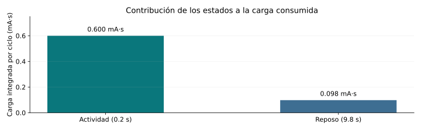
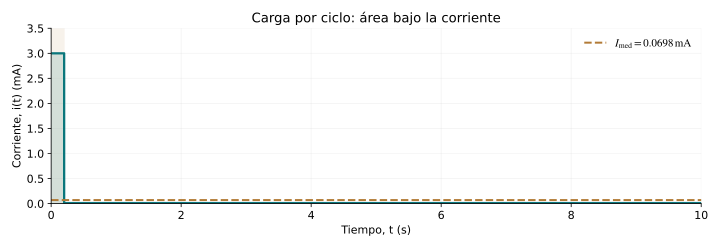
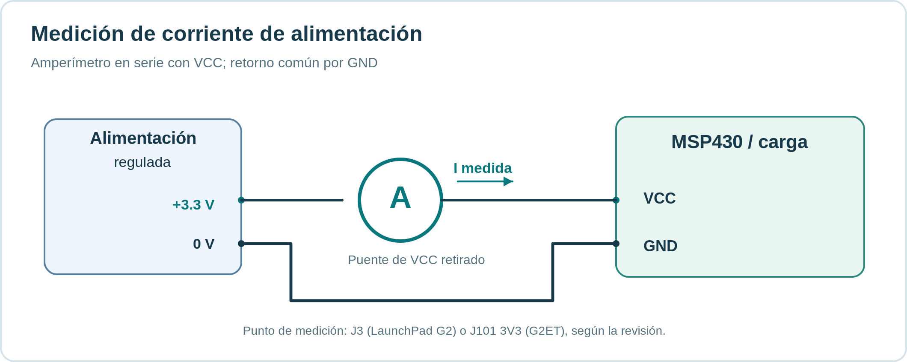

Consumo de energía y práctica de corriente
Análisis del consumo y medición experimental.
120 + 120 + 60 minMSP430G2553Resultados de aprendizaje
- Distinguir corriente eléctrica, carga, potencia y energía, utilizando unidades coherentes.
- Calcular corriente media y autonomía estimada para estados activo y de reposo.
- Medir corriente del MSP430 mediante un amperímetro conectado en serie.
- Comparar las mediciones con un modelo de consumo y reconocer fuentes de error.
Corriente, potencia y energía no significan lo mismo

La corriente (A) expresa flujo de carga por unidad de tiempo; la potencia eléctrica (W) describe la tasa de consumo de energía; la energía (J o Wh) es la integral de la potencia a lo largo del tiempo. Para una alimentación aproximadamente constante se utilizan las relaciones siguientes:
Supongamos un microcontrolador alimentado a 3.3 V que demanda 2 mA. Su potencia eléctrica instantánea es 6.6 mW. Si permanece en ese estado durante una hora, el consumo de energía será 6.6 mWh. Este resultado no describe la batería completa ni considera pérdidas del regulador, LED, sensores o transmisor.
La alimentación y la actividad de la CPU, osciladores, convertidores, puertos y cargas externas influyen sobre la corriente. Incluso las entradas flotantes pueden originar comportamiento indeterminado y consumo adicional. Por tanto, una medición útil debe especificar el estado operativo del sistema.
Consumo promedio de un sistema que despierta periódicamente

Un sensor autónomo alterna entre un estado activo para medir y comunicar, y uno de reposo para ahorrar energía. Si la duración total de cada ciclo es T = ta + tr, la fracción de actividad es D = ta/T. A partir de la ponderación temporal de las corrientes se obtiene:
Ejemplo desarrollado: un dispositivo consume 10 mA durante 2 s y 0.1 mA durante 8 s. El periodo total es 10 s, y D = 2/10 = 0.2. Entonces, Iprom = 0.2(10) + 0.8(0.1) = 2.08 mA. En comparación, dejarlo activo de manera continua supondría 10 mA. El ahorro depende de cuánto dura el reposo, no solamente de que exista un modo de bajo consumo.
Si la batería tiene capacidad nominal de 600 mAh, la estimación ideal de autonomía es 600/2.08 = 288.5 h, aproximadamente 12 días. Esta predicción no incluye autodescarga, envejecimiento, caída de tensión, eficiencia del regulador ni cambios de capacidad con la corriente y la temperatura.
Modos activos, reposo y fuentes de error
La familia MSP430 ofrece distintos modos de bajo consumo mediante el control de CPU y señales de reloj. La corriente real depende del modo seleccionado, del reloj, del voltaje, de los periféricos habilitados, del estado de los GPIO y de las condiciones ambientales. Por eso, los valores de hoja de datos se interpretan como condiciones de prueba específicas, no como garantías para cualquier programa.
Con frecuencia, los consumos de un LED, una resistencia externa o una interfaz de depuración superan al consumo del propio núcleo en reposo. Para comparar estados es preciso mantener constantes la alimentación, el instrumento y el montaje. Es preferible diseñar una tabla con hipótesis, mediciones repetidas y la justificación de diferencias.
| Condición | Qué debe mantenerse o verificarse |
|---|---|
| CPU activa con LED | Estado del GPIO, carga y corriente total |
| CPU activa sin LED | Igual firmware excepto la carga |
| CPU detenida | Relojes y periféricos que permanecen activos |
| Bajo consumo | Modo efectivo, wake-up y pines definidos |
| Entradas flotantes | Condición eléctrica y posibles transiciones |
Método de medición: amperímetro en serie

Para medir la corriente del microcontrolador objetivo se puede utilizar el puente de alimentación que conecta el depurador con la sección del MSP430, siempre que la revisión de la tarjeta lo permita. Se desconecta la alimentación antes de mover un jumper, se configura el multímetro en el rango adecuado y se inserta el instrumento en serie con el circuito de alimentación que se desea medir.
Nunca conecte el multímetro configurado como amperímetro directamente entre 3.3 V y GND: esa conexión equivale a un cortocircuito a través del instrumento. Revise los bornes del multímetro, la ubicación de la protección interna y su burden voltage o caída interna, particularmente cuando las corrientes sean muy pequeñas.
Para el informe se recomienda registrar corriente activa, reposo y con LED, así como alimentación real, configuración de reloj, versión de firmware, repetibilidad y observaciones. Se deben comparar las mediciones con predicciones y explicar discrepancias cuantitativamente.
Incertidumbre y comparación de condiciones de corriente
Una medida aislada de corriente no es suficiente para atribuir cambios pequeños al firmware. La medición puede variar por resolución del multímetro, selección de rango, caída interna del instrumento, fluctuaciones de alimentación y ciclos de actividad del programa. Si el sistema alterna rápidamente entre estados, un multímetro que integra durante cientos de milisegundos puede mostrar un promedio que depende de la fase de adquisición y del tiempo de integración.
Para comparar estados activo y reposo, mantenga el mismo voltaje, temperatura, conexiones y configuración de pines; documente la tasa de lectura y realice repeticiones. Una tabla de resultados puede incluir cinco lecturas por condición, promedio, dispersión y comentarios sobre oscilaciones. Una reducción relativa se calcula como 100 × (Iactivo − Ireposo)/Iactivo; el denominador debe indicarse explícitamente al reportar porcentajes.
Modelos de potencia, energía y carga eléctrica
Suponga que el microcontrolador opera a 3.3 V con 1.8 mA en actividad y 0.036 mA en reposo. La reducción al entrar en reposo es (1.8 − 0.036)/1.8 × 100 = 98 %. Sin embargo, si un transmisor consume 20 mA durante el envío, la corriente promedio del sistema puede estar dominada por ese intervalo, aunque sea breve. El modelo de dos estados se generaliza a múltiples estados: Iprom = Σ Ik · (tk/T).
Finalmente, recuerde que una batería de 600 mAh no entrega necesariamente 600 mA durante una hora bajo cualquier condición. La capacidad nominal depende de condiciones de ensayo y la tensión útil mínima puede limitar la autonomía antes de agotar la carga teórica. Reportar ambos resultados —autonomía ideal y limitaciones del modelo— demuestra comprensión técnica.
Balance energético: separar corriente, potencia y energía
Las actividades de la semana parten de una pregunta concreta: ¿cuánta energía necesita un sensor portátil que despierta, mide y vuelve a reposo? Para responderla es necesario separar corriente (flujo de carga), potencia (tasa de consumo energético) y energía (acumulado en un intervalo). La corriente por sí sola no determina el consumo de energía sin conocer la tensión y el tiempo.
En un ciclo periódico se pueden reconocer zonas de mayor consumo —CPU activa, adquisición o comunicación— y zonas de reposo. El área bajo la curva I(t) representa carga consumida; multiplicarla por la tensión, cuando esta permanece aproximadamente constante, permite obtener energía. Esta representación es más informativa que una sola medida instantánea.
Calcular corriente media mediante ciclo de trabajo
Definamos dos estados del sistema: ejecución activa durante ta y reposo durante tr. La corriente media no es el promedio simple de ambas corrientes salvo que los tiempos sean iguales. Es el promedio ponderado por duración. El ciclo de trabajo D representa la fracción de tiempo activo.
Ejemplo resuelto: un sensor que mide cada diez segundos
1. Considere un ejemplo hipotético: el equipo permanece activo 0,10 s con Iₐ = 3 mA y en reposo los restantes 9,90 s con Iᵣ = 2 µA. No son valores medidos del MSP430 ni de la LaunchPad.
2. Convierta las magnitudes a unidades coherentes: 2 µA = 0,002 mA. El ciclo de trabajo es D = 0,10/10 = 0,01 (1 %).
3. La corriente media es (0,01)(3 mA) + (0,99)(0,002 mA) = 0,03198 mA = 31,98 µA.
4. Si la fuente nominal fuera 3 V, la potencia media idealizada sería 3 V × 31,98 µA = 95,94 µW.
5. Observe que el resultado cambiaría si el LED, el depurador, otros periféricos o las transmisiones consumieran corriente adicional.
Medición segura con el jumper J101
La práctica de medición emplea la LaunchPad MSP430G2553 y el bloque J101 para interrumpir la alimentación del microcontrolador e insertar un amperímetro en serie. El principio es sencillo: la corriente debe atravesar el instrumento. Colocar el multímetro en modo corriente entre 3,3 V y tierra constituye un cortocircuito y puede dañar la placa, el medidor o su fusible.
Secuencia operativa de laboratorio
| Paso | Procedimiento | Control de calidad |
|---|---|---|
| 1 | Apague la placa y localice el puente 3V3 del J101. | Compruebe identificación visual en su tarjeta. |
| 2 | Retire el puente según la guía de práctica. | No remueva ni recoloque conexiones energizadas. |
| 3 | Conecte el multímetro en serie en el hueco correspondiente. | Terminal correcta de mA, rango inicial amplio. |
| 4 | Alimente, registre condición activa y observe lectura estable. | Anote unidad, rango y estado de LED / pulsador. |
| 5 | Accione S1 según el código de la práctica y registre LPM4. | Verifique que el firmware corresponde a la versión usada. |
| 6 | Desenergice, retire el instrumento y reponga J101. | Fotografía o esquema de montaje, tabla completa. |
Modos de bajo consumo y limitaciones de la medida
El MSP430 dispone de distintos modos de bajo consumo que desactivan selectivamente la CPU y señales de reloj. No basta con invocar un modo de reposo para predecir una cifra exacta de corriente: importan la configuración previa, los periféricos encendidos, el estado de los GPIO, la temperatura y las condiciones del circuito de medida.
| Condición | CPU / relojes | Qué verificar antes de comparar |
|---|---|---|
| Ejecución activa | CPU y reloj de ejecución disponibles | Frecuencia, periféricos y LED |
| LPM0 | CPU detenida; pueden mantenerse relojes de periféricos | Configuración de SMCLK, ACLK y módulos |
| LPM3 | Reposo más profundo, con ACLK según configuración | Fuente de ACLK y periféricos habilitados |
| LPM4 | Modo profundo sin osciladores activos habituales | Pines, ruta de alimentación y mecanismos de despertar |
El instrumento también modifica el sistema: introduce una resistencia o caída de tensión de carga (burden voltage). En escalas de microamperios pueden aparecer oscilaciones, corrientes de fuga o resolución insuficiente. Registre el modelo del multímetro, su rango, la resolución y cualquier incertidumbre especificada. No extrapole un valor de corriente instantáneo a autonomía sin considerar tiempos de actividad.
Comparación de medidas
1. Registre varias lecturas independientes para cada estado, con condiciones eléctricas equivalentes y una estrategia de espera definida.
2. Calcule el promedio y la desviación estándar muestral cuando disponga de observaciones repetidas; no invente valores para rellenar la tabla.
3. Compare el orden de magnitud de las corrientes con el esperado, identifique elementos que todavía consumen energía y discuta la variación observada.
4. Presente como resultado experimental únicamente lo medido; las curvas simuladas no representan mediciones físicas.
Estimación de autonomía a partir del perfil de corriente
Un dispositivo alimentado por batería no permanece necesariamente en un solo estado. Puede despertar para adquirir datos, procesarlos, comunicar resultados y regresar a un modo de bajo consumo. El valor promedio de corriente se obtiene a partir de la corriente instantánea a lo largo del tiempo, no mediante un promedio simple de estados con duraciones diferentes.
Si se modela la corriente como dos niveles constantes, activo y reposo, la integral se divide en dos intervalos. Al reagrupar términos aparece el ciclo de trabajo D, una variable adimensional entre cero y uno.
Ejemplo razonado. Para un periodo de 10 s, el dispositivo permanece 0.20 s en activo con una corriente hipotética de 3.0 mA y 9.8 s en reposo con 0.010 mA. El ciclo D = 0.02 y la corriente promedio es 0.02(3.0) + 0.98(0.010) = 0.0698 mA. Estos valores son didácticos, no una especificación ni una medición del MSP430G2553.
Laboratorio interactivo · Perfil de consumo y autonomía
Varíe el tiempo activo, el periodo y las corrientes. El gráfico muestra el perfil idealizado y la energía equivalente por ciclo.
La autonomía resultante es una estimación ideal. No contempla autodescarga, regulación, envejecimiento ni capacidad útil dependiente de la carga.
Interpretación de la medición con amperímetro en serie
El amperímetro se coloca en serie con el trayecto cuya corriente se desea medir, respetando el procedimiento de la guía de práctica y verificando previamente que la tarjeta esté desenergizada. La resistencia interna del instrumento puede producir caída de tensión y modificar el funcionamiento del circuito; este error instrumental se conoce como tensión de carga o burden voltage.
La corriente de toda la placa puede diferir sustancialmente de la corriente del microcontrolador aislado. La interfaz de depuración, LED, reguladores y otros componentes constituyen consumos adicionales. Registre exactamente qué punto se interrumpe y qué subsistemas quedan alimentados durante cada medición.
Símbolos y unidades
- I
- corriente eléctrica en A o mA
- V
- tensión en V
- P
- potencia en W
- E
- energía en J
- D
- ciclo de trabajo sin unidades
- t
- duración en s
- Q
- capacidad eléctrica en Ah o mAh
- R
- resistencia en Ω
Análisis energético y validación experimental
La corriente describe la rapidez con que circula la carga eléctrica, la potencia cuantifica la transferencia instantánea de energía y la energía acumula esa potencia a lo largo del tiempo. No son términos intercambiables: medir una corriente pequeña durante reposo no basta para estimar autonomía si el dispositivo despierta regularmente para realizar tareas intensivas.
Potencia instantánea y energía consumida
- p(t)
- potencia instantánea (W)
- v(t)
- tensión de alimentación (V)
- i(t)
- corriente instantánea (A)
- E
- energía consumida (J)
- T
- duración del intervalo de observación (s)
- t
- tiempo (s)
Cuando la tensión es aproximadamente constante, puede utilizarse la potencia media Pmed ≈ V Imed. Cuando la tensión cae significativamente, como puede suceder con algunas baterías, es más apropiado integrar el producto de las señales de tensión y corriente medidas simultáneamente.
Derivación de la corriente media a partir de dos estados
Considere un intervalo activo de duración ta con corriente Ia, seguido de otro de reposo de duración tr con corriente Ir. La carga total por ciclo es la suma de las áreas bajo cada tramo de la señal de corriente. Al dividir esa carga por la duración del ciclo se obtiene la corriente promedio.
- Imed
- corriente media durante el ciclo (A o mA)
- Ia
- corriente durante el estado activo (A o mA)
- Ir
- corriente durante el reposo (A o mA)
- ta
- duración del estado activo (s)
- tr
- duración del reposo (s)
- D
- fracción temporal en activo, sin unidades
Autonomía: estimación ideal frente a condiciones reales
- tideal
- autonomía aproximada (h)
- Qútil
- capacidad aprovechable de batería en las condiciones de uso (mAh)
- Imed
- corriente media de la carga (mA)
Esta división es una estimación de primer orden, no una predicción garantizada. La capacidad útil depende del perfil de descarga, la temperatura, el envejecimiento, la corriente de pico y las pérdidas de acondicionadores o reguladores. Tampoco puede suponerse que la corriente de toda la placa LaunchPad coincida con la del microcontrolador aislado.
Lecciones y actividades
Distribución de trabajo para las tres sesiones semanales:
Clase 1 · 120 min
Modelado de consumo, estimación de autonomía y ejercicios numéricos.
Clase 2 · 120 min
Práctica 1: medición de corriente en el MSP430G2553.
Clase 3 · 60 min
Análisis de corriente y entrega de actividad de hoja de datos.
Entregas
- Ejercicios de consumo: clase 3, semana 3.
- Análisis de corriente: clase 3, semana 4.
- Reporte de práctica 1 según guía y rúbrica correspondientes.
Trabajo para la semana siguiente
Repase representación binaria, hexadecimal y operaciones lógicas AND, OR y XOR.
Materiales y recursos
- Actividad #U2013 Analisis de corriente del MSP430G2553.pdf — Actividad 2
- Estructura_Reporte_Practica_1_MSP430.pdf — Practica 1
- Practica_1_Codigo_MSP430G2553.pdf — Practica 1
- Practica_1_Medicion_Corriente_MSP430_LaunchPad.pdf — Practica 1
- Rubrica_General_Practicas_Microcontroladores.pdf — Rubrica de evaluacion
- Cuanta energia necesita realmente un microcontrolador.pdf — Presentaciones
- MSP430_Power_Analysis.pdf — Presentaciones
Tutor IA: preguntas para razonar
Actúe como tutor de Sistemas Digitales II (MSP430G2553). Estoy estudiando la semana 3: Consumo de energía y práctica de corriente. Tráteme de usted. Formule una pregunta a la vez; revise mis argumentos, ayúdeme a identificar mis errores y no proporcione respuestas completas a actividades evaluadas. Pídame justificar con registros, unidades y documentación técnica cuando corresponda.